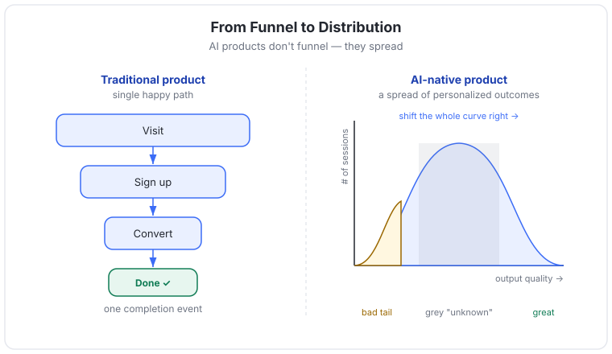
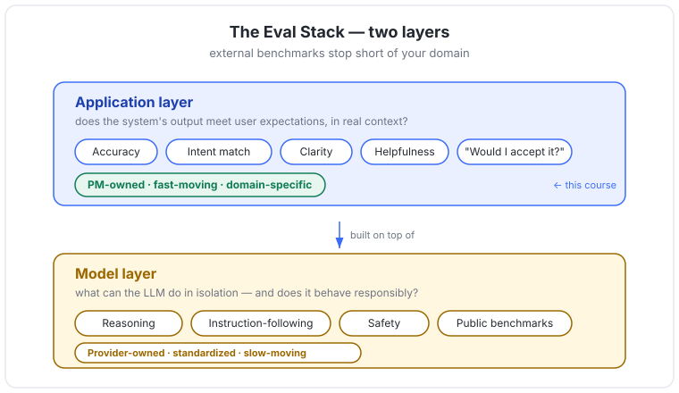
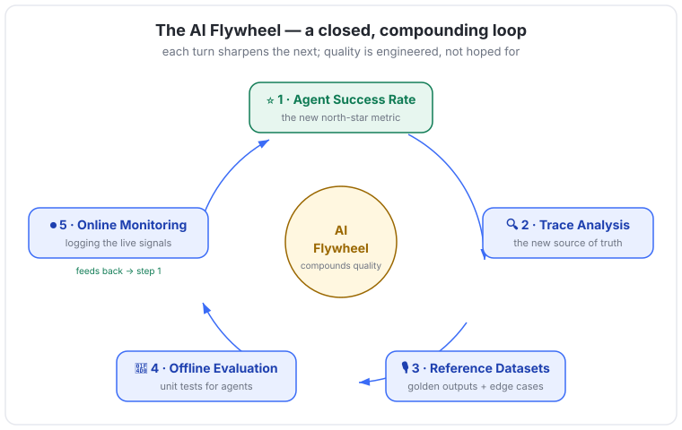

#Chapter 1 — Introduction to the AI Flywheel for Product Evaluation
#In one line
This chapter teaches PMs why traditional usage metrics break for AI products and introduces the AI Flywheel — a 5-phase system for measuring and continuously improving the quality of work an AI agent does.
#Why it matters for PMs
The moment an AI feature opens up beyond a friendly demo audience, the picture gets muddied: some users love it, others complain or never return, and at the next product review you have no defensible answer to "is the AI actually doing good work consistently?" Engagement and retention can't answer that question. The PM's job has changed from getting a user to the end of a flow to guaranteeing the work performed at the end of that flow meets a quality bar — which means the PM now owns defining "good," building the rubric to score it, and driving a roadmap against that score.
#Core concepts
- The evaluation gap. Traditional usage metrics (engagement, retention, funnel completion) cannot reveal whether an AI gave the right answer, made a reasonable decision, followed policy, or handled ambiguity well. This gap is the defining challenge of AI product development.
- Why old metrics fail. Traditional software guides users down a single "happy path." AI-native products don't: each interaction produces a wide distribution of personalized outcomes per user, and the system does not behave the same way 100% of the time. A single happy-path funnel cannot describe a distribution of outcomes.
- Measuring usage vs. measuring work. The new questions that engagement metrics never surface:
- Did the system actually resolve the user's intent, not just respond?
- Did it make the right trade-offs under uncertainty?
- Did it follow the constraints that matter to this customer, in this context?
- When it failed, did it fail in acceptable ways?
- Model evaluation vs. application evaluation (two distinct layers of the stack):
- Model layer — benchmarks evaluate what an LLM can do in isolation and whether it behaves responsibly (reasoning, instruction-following, avoiding harmful output). Largely standardized, owned by model providers and third-party research teams, and change slowly relative to product iteration.
- Application layer — judges whether the system's outputs meet user expectations in real contexts: accuracy, correct intent identification, clarity, speed, helpfulness, and whether a reasonable user would accept the output as "good." This is where judgment enters and where applied AI products differentiate. No external out-of-the-box benchmark can define quality for your domain — that work belongs to product leaders.
- This course focuses on the application layer.
- Key definitions introduced:
- AI Flywheel — a system for consistently improving AI product quality over time that combines analytics, user research, and evaluation.
- Golden outputs — a set of ideal, human-verified responses that define the quality standard for an AI system.
- Context engineering — the process of defining and refining the input context given to an agent: system instructions, tool specifications, and realistic few-shot examples.
#The mental model — how to think about this
Stop picturing your product as a funnel (a single path with a known endpoint) and start picturing it as a distribution. Every user interaction lands somewhere on a spread of possible outcomes — good, bad, and a large grey zone of "unknown." Your job is not to push everyone through one door; it's to shift the whole distribution toward higher quality and shrink the bad tail.
Because outcomes are a distribution, you cannot measure quality with a single funnel completion event. You need (a) a composite signal that estimates success across that distribution, and (b) a closed feedback loop that keeps tightening it. That loop is the flywheel: each turn — measure success, read the traces, build datasets, run offline evals, monitor live — feeds the next and compounds quality over time. Accept up front that a significant share of sessions will have an unknown outcome. That uncertainty is the new reality, not a failure of measurement.
#Key frameworks / steps / loops
The AI Flywheel — 5 phases (there is no one-size-fits-all; this is the rough shape):
- Agent Success Rate (⭐️ the new north star metric) — a composite metric that measures agent output and serves as the primary goal. It combines: user feedback (thumbs up/down), user actions (download / accept the output), and semantic analysis of the conversation (repeated prompts for the same action, signs of frustration). A significant portion of sessions stay "unknown" — that's acceptable. Where outcomes are verifiable, the metric can be simpler: % ticket resolution rate (support), % code suggestions accepted without edits (coding).
- Trace Analysis (🔍 the new source of truth) — a trace is the full record of user inputs and LLM outputs in every product session. Sample traces aligned to each primary user intent. Coding/labeling traces builds a view of which error modes actually matter and which to prioritize to most quickly raise Agent Success Rate.
- Reference Datasets (🎙️ golden outputs and edge cases) — trace analysis reveals the gap between what you thought users were doing and the real diversity of their interactions. Using user intent mapping (a term borrowed from search analytics — categorizing natural-language inputs by the user's goal), build comprehensive datasets per intent, including golden outputs, failure modes, and edge cases, to run evaluations against.
- Offline Evaluation (📐 unit tests for agents) — tests that calibrate improvements or regressions in a new agent version before release. Hard to make realistic (especially for long-horizon agents), but the closer to reality, the faster you can ship. Without reasonable offline evals you cannot safely test small changes to architecture, the agent harness, prompts, or context management. They are essential for a team to get better at context engineering.
- Online User Monitoring (⏺️ logging the signals) — real-world usage is messy and full of surprises. Log all live signals and run (anonymized) semantic analysis of real sessions to confirm the agent works in the wild. This observability layer drives how you track Agent Success Rate — closing the loop of the flywheel.
Supporting framework — the two-layer eval stack: Model-layer benchmarks (provider-owned, slow-moving) sit below application-layer evals (product-owned, fast-moving, domain-specific). PMs operate at the application layer.
#Visual explainers

ch0-01-sankey-to-distribut.jpg. Contrasts a traditional Sankey/funnel diagram (users flowing along a single happy path) against a probability distribution of personalized outcomes. Teaching point: AI products don't funnel — they spread; quality must be measured across a distribution, not a single completion path.
ch0-02-eval-stack.png. Depicts the two layers of evaluation — model layer (standardized, provider-owned benchmarks for capability and safety) beneath the application layer (domain-specific product quality judged against user expectations). Teaching point: external benchmarks stop short of your domain; application-layer quality is the PM's territory.
ch0-03-ai-flywheel.jpg. The 5-phase loop — Agent Success Rate → Trace Analysis → Reference Datasets → Offline Evaluation → Online User Monitoring → back to Agent Success Rate. Teaching point: quality is built through a compounding, closed loop, not a one-time launch; the best AI products engineer this system rather than hoping to start great.#How this connects to: simulation / dataset strategy / synthetic data / actual data
- Actual data is the raw fuel: traces (Phase 2) are real user inputs and LLM outputs, and online monitoring (Phase 5) is the continuous stream of real-world sessions. Trace analysis on actual data is explicitly called "the new source of truth."
- Dataset strategy is Phase 3: reference datasets are built per user intent (via intent mapping) and must include golden outputs, failure modes, and edge cases. The strategy is intent-driven coverage, not volume for its own sake.
- Simulation / synthetic data is implied, not detailed here: offline evals (Phase 4) are described as needing to be as realistic as possible for long-horizon agents — the realism problem is exactly where simulated/synthetic scenarios become relevant. This chapter flags the need; later modules go deeper.
- Flow: actual traces → intent mapping → reference datasets (with golden outputs) → offline evals → live monitoring feeds new actual traces. The loop continuously refreshes the dataset strategy with real-world signal.
#Working with ML / eng teams
- The PM does not delegate evaluation to ML engineers. The chapter's strongest instruction: PMs must "lead from the trenches" — personally reviewing traces and writing evaluation rubrics.
- PM owns: defining what "good" output looks like, building and maintaining the eval rubric, intent mapping, prioritizing error modes from trace analysis, and the roadmap to improve Agent Success Rate.
- Shared with ML/eng: offline evals function as the team's unit tests — eng relies on them to safely change agent architecture, harness, prompts, and context management; PM ensures they're realistic and well-maintained. Realistic offline evals are what let the team get better at context engineering together.
- Eng/infra owns: the logging and observability layer that captures traces and live signals; the PM consumes its output to track the north-star metric.
#Role of design
— (Not addressed in this module. Design is not discussed; the chapter centers PM-owned quality measurement and PM/ML collaboration.)
#Process to follow
The repeatable cycle a PM runs:
- Define the north star. Establish Agent Success Rate as the team's primary non-vanity metric. Choose composite signals (feedback + actions + semantic analysis) or, where outcomes are verifiable, a simpler direct metric.
- Sample and read traces. Pull a sample of traces for each primary user intent. Read them yourself.
- Code the error modes. Label traces to surface which failure modes recur and which most depress success rate. Prioritize.
- Map intents and build reference datasets. Categorize real inputs by user goal; assemble datasets per intent with golden outputs, failure modes, and edge cases.
- Write and run offline evals. Treat them as unit tests; make them as realistic as possible; gate architecture/prompt/context changes on them before release.
- Monitor live. Log all signals, run anonymized semantic analysis on real sessions, and feed results back into the success-rate metric — closing the loop.
- Repeat. Each turn of the flywheel sharpens the rubric, the datasets, and the metric.
#References & sources
- AI Flywheel — Calibre Labs, "Building an AI Product Flywheel": https://blog.calibrelabs.ai/p/building-an-ai-product-flywheel (the source of the "AI Flywheel" concept used throughout)
- METR (independent agent/model evals, new frontiers): https://metr.org/
- GDP-Val (OpenAI): https://openai.com/index/gdpval/
- Terminal-Bench: https://www.tbench.ai/
- LangChain — "In software, the code documents the app; in AI, the traces do" (role of traces): https://blog.langchain.com/in-software-the-code-documents-the-app-in-ai-the-traces-do/
- Frameworks/terms cited: AI Flywheel; Agent Success Rate (north-star metric); Trace Analysis; Reference Datasets; Offline Evaluation; Online User Monitoring; Golden Outputs; Context Engineering; User Intent Mapping (borrowed from search analytics); the two-layer eval stack (model vs. application).
- Course context: Reforge-hosted module (delivered via Docebo/SCORM). Lesson 1 "The AI Flywheel," Lesson 2 "Recap and Further Learning." Next module covers the three stages of the AI-Eval lifecycle — vibe checks, offline evals, and user monitoring — mapped to AI product development stages.
#Skill / template / app ideas
/trace-sample— pull and stratify a sample of session traces by user intent, ready for hand-labeling./error-mode-coder— guided labeling pass over sampled traces that clusters and ranks error modes by impact on success rate.- Agent Success Rate template — a spreadsheet/dashboard schema that composes thumbs feedback + user actions (download/accept) + semantic frustration signals into one composite score, with an explicit "unknown" bucket.
- Reference Dataset builder — intent-mapping worksheet → per-intent dataset with columns for golden output, failure modes, and edge cases.
/eval-rubric— scaffold an application-layer eval rubric (accuracy, intent match, clarity, speed, acceptability) for a given agent.- Offline-eval harness starter — a unit-test-style scaffold that runs an agent version against the reference dataset and reports regressions vs. golden outputs before release.
- Monitoring digest — scheduled anonymized semantic analysis of live sessions that updates the Agent Success Rate trend and flags new error modes.
#Teaching notes (for the instructor)
Emphasize:
- The hard pivot from workflows to work — measuring usage paths vs. measuring the quality of work the AI performs. This is the whole chapter in one move.
- "Unknown" is an acceptable, expected outcome bucket. Don't let PMs think a good metric eliminates uncertainty.
- PMs evaluating hands-on — reading traces and writing rubrics themselves. The chapter explicitly warns against delegating this to ML engineers.
- The flywheel is a closed loop: monitoring feeds the metric, which guides trace sampling, which builds datasets, which power evals. Teach it as compounding, not sequential-and-done.
Common misconceptions to correct:
- "We already track engagement/retention, so we're covered." — Those metrics are silent on correctness, policy adherence, trade-offs, and acceptable failure.
- "We can just adopt a public benchmark (METR/GDP-Val/Terminal-Bench) to prove quality." — Those are model-layer/frontier evals; no external benchmark defines quality for your application domain.
- "Eval is an ML/eng task." — It is a PM-led discipline; eng owns observability and the harness, PM owns the definition of good.
- "A single success number captures everything." — It's a composite estimate over a distribution, with a real unknown share.
Discussion question / exercise:
- Take a live AI feature your team owns. (a) Write down the 4 work-quality questions (intent resolved? right trade-offs? right constraints? acceptable failure?) for it. (b) Draft a v0 Agent Success Rate: which feedback signals, which user actions, which semantic signals — and estimate what fraction of sessions would land in "unknown." (c) List your top 3 user intents and one golden output for each.